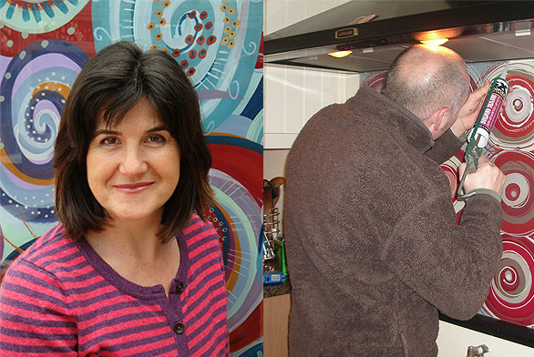

About Funky Splashbacks
Funky Splashbacks is a small family business owned and run by myself, Jo Omar and my partner Matt Watts from our home studio in Wales.
I am an artist and designer, graduated from Loughborough Art college with a degree in Printed Textiles. Matt is a financial advisor who is also very practical so he fits the splashbacks, with a little help from me......"right a bit....left a bit....' that sort of thing! He also builds the stands for any shows we do and helps with the sales and marketing.

We started 'Funky Splashbacks' after struggling to find a splashback for our own kitchen, all that seemed to be available were tiles or stainless steel. We had a blank space above the cooker for a year that was getting a bit grubby so I had the idea to paint something on the wall but also wanted to use glass as it is so durable and easy to keep clean. This idea soon evolved, after a bit of trail and error, into painting a design onto the back of the glass.
We had a fantastic response from whoever saw it and soon we were doing commissions.
I love designing and making something that is a piece of art and also very practical!
Jo Omar